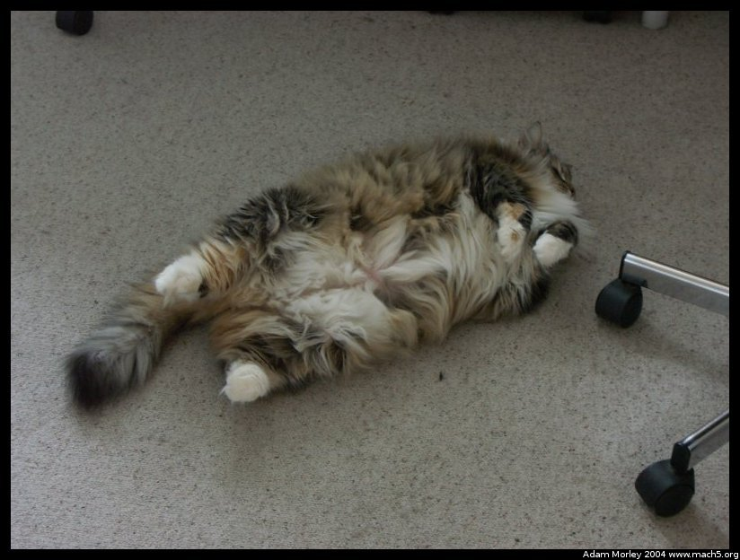
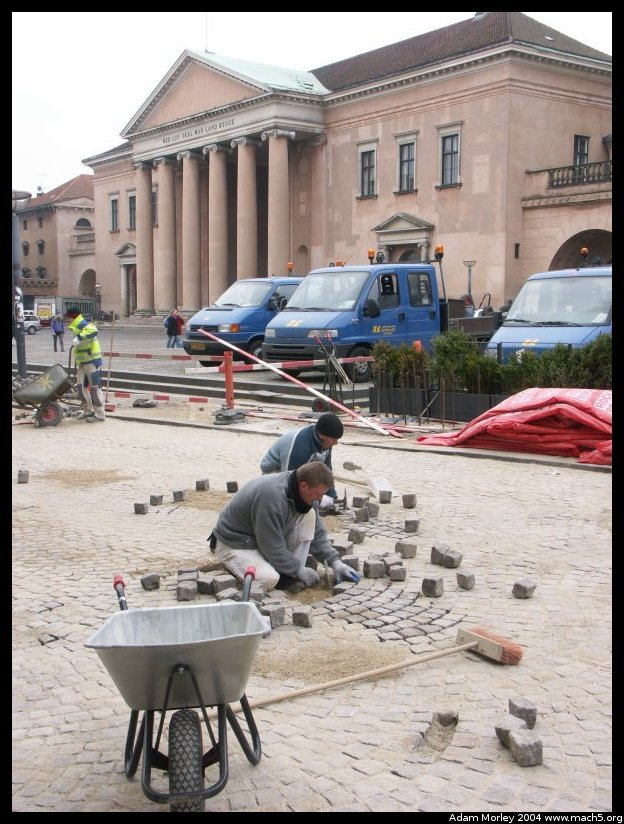

Sometime near the beginning of March, two of my friends who lived in the so-called, "Scholars House" came to visit me in Denmark. Or rather, to visit Denmark, and it was handy I was there. ;-)
Both came, if I remember correctly, by way of England, into Malmö airport. Then they popped across the new bridge between Sweden and Denmark on the train, which only takes about forty minutes to go from downtown Malmö to downtown Copenhagen.
Rachel was also kind enough to smuggle in a new toy to satiate my apetite for overpriced camera equipment. The Konica Minolta A2, which is both compact and functional as a digital camera.
Rachel came in first, so I took her on a tour of Copenhagen that started, as all tours of Copenhagen should, on Rådhuspladsen (the town hall square, effectively) at the beginning of Strøget (the walking street through central Copenhagen).
We visited all the important sites, Nyhavn (a wonderful place for lunch or a beer, though somewhat unhelpful in Danish education. Probably because of the sheer volume of tourists),
the Queen's castle (above),
Tycho Brahe's statue at the University of Copenhagen Observatory building near the Botanical Garden,
And stopped for tea at Cafe Europa, which is a rather trendy (and expensive!) cafe located on Højbroplads. Diagonally across from McDonalds. You can see that tea is complicated at fancy places --- hot water, loose tea, a filter, a cup, etc.
Before we went in to Cafe Europa, I noticed that NetBSD really can run on anything (including a manhole cover!). For those of you not "in the know," NetBSD is an operating system that runs on nearly everything, from Playstation 2s to big big servers. I noticed quite a few NetBSD stickers, and even a few OpenBSD stickers around Copenhagen. (This server runs OpenBSD)
We later moved on to dining at Cafe Zirup, just off Strøget. I have developed (as you can see from the two previous pictures) a habit of taking pictures of people when they don't know it. Okay, I admit it. I have a fascination with the way women dress in Denmark. It's just so. . .something.
The next day, Rachel and I headed to Malmö to pick up Anna. We rode the train from Copenhagen, across the Øresund, and into Malmö central station. I sort of stood around being that sketchy guy who takes pictures of people, while I waited for Anna.
Malmö central station is a smaller train station, but still a major train hub for the southern part of Sweden (the area around Malmö is called Skåne). All trains going from Copenhagen to Stockholm will pass through this station, or at least I'm fairly certain they will. This is because the trains in Sweden operate on the left side, while the trains in Denmark operate on the right side! Going over the bridge to Sweden, the Danish version of train travel is used. The trains from Denmark come into Malmö central and then continue on their way, but switch sides. It wasn't until I went to Stockholm (thankfully, on the left side of the tracks!) on the X2000 that I realized this fact.
Another example of the different style of fashion in Scandinavia. Scarves (understandably so) are popular in the winter. Sometimes, life's passing parade notices the odd looking chap taking pictures.
On the walking street called Strøget (The stretch, ie: the stretch of walking path), Anna (foreground) and Rachel (background). Also notice the Danes (assumably, given their style of dress), on the right. You can just barely pick out one of the famous euro-pointy shoes (white).

We came home to find my host parent's cat (Vika) asleep on the floor,but she woke up with a snort and a shake moments later.

In America, we've often paved over brick streets (parts of Little Italy in Cleveland have done this, though Murray Hill still remains true to form), whereas in Copenhagen it seemed that relaying brick was all the norm.
Yeah.
We also went up in the Round Tower, and on the way down, Rachel stopped in the bathroom. She emerged and said, "There's something in the bathroom for you."
A bag, with my name on it, full of apple juice. Very odd.
And then we returned to Dragør, by way of the old city. No tour of Copenhagen is complete without seeing the cute little yellow houses of Dragør.
Adam can be reached at adam dot morley at gmail dot com